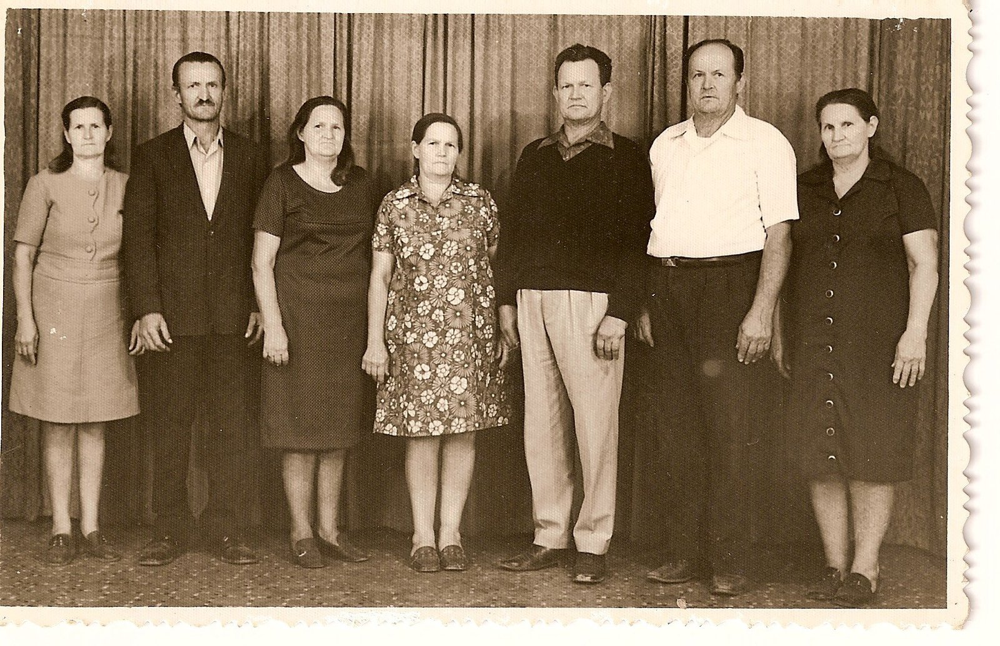

Parte I · Ecos na Serra Catarinense
Capítulo 3 — A Irmandade dos Primos-Detetives
27,6° S · 48,5° O — Florianópolis, SC
Nenhum observador vê a tempestade inteira. A rede vê.
Cem anos depois
Em 30 de março de 2013, os descendentes de João e Maria Meyer Haas se reuniram para comemorar o centenário da chegada dos dois ao Brasil. Éramos, segundo a conta que se fez na época, mais de seiscentos descendentes diretos, espalhados por Santa Catarina, pelo Paraná e por outros cantos do país e do mundo. Uma boa parte estava ali.
Não vou reconstituir a festa. Não tenho notas daquele dia, e as imagens que circulam na memória são vagas demais para virar cena sem que eu acabe inventando. O que ficou do centenário, para mim, não foi um salão nem uma mesa: foi um texto. Uma prima, Marise Haas Lourenço, escreveu e leu naquele dia uma história de João e Maria, assinada “Florianópolis, março de 2013”. Esse texto é, até hoje, a fonte mais completa que a família tem sobre os dois, e boa parte da Parte II deste livro se apoia nele.
Ficha do Arquivo — História de João e Maria Meyer Haas, texto de Marise Haas Lourenço lido no centenário da chegada (30/03/2013), assinado “Florianópolis, março de 2013”. Cópia digital no repositório da família: livro/fontes/historia_joao_e_maria_marise_2013.txt. Fontes declaradas pela autora: documentos e fotos; pesquisas em arquivos, museus e bibliotecas; entrevistas; relatos.
Li esse texto muitas vezes depois daquele dia, e cada leitura me mostrou uma coisa diferente. Na primeira, li como neto: uma história comovente, bem contada, com perdas e conquistas, com a coragem dos bisavós e a gratidão dos descendentes. Na segunda, li como pesquisador, e comecei a sublinhar. Na terceira, li como meteorologista, e percebi que o texto era, ele mesmo, o produto de uma rede.
Marise abre com uma declaração de método que eu gostaria de ter escrito. Diz que muitos contribuíram para que a história fosse escrita e que, para não esquecer ninguém, opta por não mencionar nenhum nome. Diz que o texto “não resulta da cabeça de quem escreveu”, mas tenta se aproximar o melhor possível da verdade. E lista as fontes: documentos e fotos, pesquisas em arquivos, museus e bibliotecas, entrevistas, relatos. Há ali, sem que ela use a palavra, a descrição exata de um trabalho de síntese: muitas observações parciais, de qualidade desigual, combinadas num retrato único.
Logo depois, ela faz uma observação que me pareceu, na época, apenas uma gentileza, e que hoje considero a frase mais importante do texto. A família Haas, escreve, “não é um sobrenome”, mas o conjunto de inúmeros outros, sem os quais não existe família. E agradece nominalmente a alguns deles: aos Meyer, da Mota; aos Sebold, do Tio Augusto; aos da Rosa, da Tia Rosalina; aos Klettenberg, da Tia Paula; aos Boeing, do Tio João; aos Nagel, do Tio Paulo; aos Doerner, da Tia Adelina, que era minha mãe; e aos Sautner, do Tio Martin. E, por extensão, a todos os outros sobrenomes sem os quais aquela família de mais de seiscentos não existiria.
Só fui entender a precisão dessa lista meses depois, quando a comparei com outra fonte. Mas já na primeira leitura ela me tocou por outro motivo. Eu tinha passado anos pensando na minha genealogia como uma linha, a linha Haas, que subia de mim para meu pai, do meu pai para o Fata, do Fata para a Baviera. Marise estava dizendo, com toda a delicadeza, que essa linha não existia sozinha. Que cada geração tinha sido feita pelo encontro de duas famílias, e que a metade que não levava o sobrenome era tão responsável pelo resultado quanto a outra. Era a mesma coisa que eu tinha visto à mesa de Vidal Ramos, entre os Haas do meu pai e os Doerner da minha mãe. Agora estava escrita.

O texto e o que ele não diz
O texto de Marise conta a história em ordem. O casamento em 1907, ainda jovens. O ofício de Johann, de família de pedreiros, especialista em gesso, intérprete de dialetos. O trabalho de Maria, que ordenhava vacas por salário. A crise na Alemanha, a ameaça de guerra, a morte precoce das duas primeiras filhas, Hildegard e Frida, “por razões que desconhecemos”. O nascimento de Luisa em 1910 e de Walter em 1912. A decisão de partir, tomada, imagina ela, depois de muitas conversas e muitas opiniões contrárias e favoráveis. O embarque no Formosa, em Marselha, com Maria grávida e os dois pequenos no colo.
Depois, a chegada. O texto diz que o navio chegou ao Brasil em 26 de março de 1913, que o desembarque no Rio de Janeiro foi recusado e que o vapor seguiu de porto em porto pela costa, cumprindo quarentena, com excesso de passageiros, comida ruim e higiene precária, e com muitas mortes a bordo. A família desembarcou finalmente em Laguna, foi levada para o Barracão dos Imigrantes e ali, seis dias depois, em 5 de maio, nasceu Gertrudes. Luisa e Walter, enfraquecidos pela viagem, não resistiram.
Daí em diante, a história segue para o Lote 17 em Rio do Ouro, hoje Anitápolis, para Ituporanga, Rio Novo, Águas Negras, as obras da cidade, a guerra, o rádio no porão, a velhice em Ribeirão das Pacas e as sepulturas em Aurora. Marise não esconde as partes duras. Fala da política de ocupação das terras indígenas e dos bugreiros pagos por cabeça, chamando aquilo pelo nome que tem: um genocídio patrocinado pelo Estado. Fala das notícias de violência contra descendentes de alemães durante a guerra, que chegavam à família e fizeram o Fata manter a espingarda carregada ao alcance da mão. E termina com uma pergunta que responde ela mesma: “Essa parece uma história triste? Não, não é triste.”
Como neto, eu concordava. Como pesquisador, comecei a fazer perguntas que o texto não respondia, nem tinha a obrigação de responder. Em que data exatamente eles saíram da Alemanha? Por que o desembarque foi recusado no Rio? Quanto tempo durou a quarentena? Em que portos o navio parou? Onde foram enterrados Luisa e Walter? Se Gertrudes nasceu no Barracão de Laguna, há um registro de batismo dela na paróquia? E de onde, na Alemanha, vinham os dois? O texto não dá o nome de nenhuma aldeia.
Não eram críticas. Um texto escrito para ser lido num centenário diante de seiscentas pessoas não é o lugar para notas de rodapé. Mas eram perguntas que só outros documentos podiam responder, e eu sabia que alguns desses documentos já estavam nas mãos de alguém da família.
A planilha de Londrina
Esse alguém era meu primo-irmão Agenor Haas.
Agenor nasceu em 1943 em Ituporanga, filho mais velho de Alexandre Haas e Paula Klettenberg, o que faz dele neto do Fata e da Mota pelo mesmo caminho que eu, só que vinte e dois anos antes. É engenheiro civil, formado na Universidade Federal do Paraná, com uma vida dedicada à execução de obras, e radicado há muitos anos em Londrina. Durante anos, sem alarde, com paciência de engenheiro e método de quem está acostumado a orçamentos e cronogramas, montou uma planilha com todos os descendentes de Johann e Maria que conseguiu encontrar.
Quando a planilha chegou até mim, numa das muitas trocas de mensagens que tivemos, levei algum tempo para entender o tamanho do que estava diante de mim. São 291 linhas. Na primeira coluna, os filhos de Johann e Maria e seus cônjuges; na segunda, os netos; na terceira, os bisnetos; na quarta, os trinetos. Pelo resumo que acompanha a planilha, são 11 filhos, 63 netos, 194 bisnetos e 109 trinetos. Em muitas células há comentários, as notas de Agenor, 55 ao todo, com datas, lugares, profissões e pequenas biografias.
Uma das primeiras coisas que percebi foi que a maior parte daquelas notas não podia sair do computador. Agenor tinha juntado o que a família lhe mandava, e a família mandava tudo: endereços completos, números de telefone, endereços eletrônicos, escolaridade, profissão, situação conjugal, nomes de crianças. Era um retrato precioso de uma família num certo momento do início do século XXI, e era também um conjunto de dados pessoais de pessoas vivas que nunca autorizaram sua publicação. Por isso nenhum desses dados entra neste livro. Dos descendentes vivos, falo apenas em números. Das notas, uso só as que tratam dos patriarcas e dos filhos de Johann e Maria, todos já falecidos ou figuras da história da família. Se um dia algum primo quiser contar a própria história, que conte com a própria voz.
As notas dos patriarcas, porém, eram ouro.
Na célula de Johann, Agenor escreveu um pequeno resumo da vida dele. Diz que era pedreiro, alemão, nascido em Leonberg, “que hoje se chama Maxhütte”, na Baviera, filho de Josef Haas e Franziska. Que casou em 3 de agosto de 1907 em Eibenstock. Que saiu da Alemanha em 13 de março de 1913 e chegou ao Rio de Janeiro em 26 de abril, depois de 44 dias de viagem, no navio Formosa. Que, nas palavras dele, “não foi encontrado ainda o registro do desembarque deles em Florianópolis”. Que viveu até 1918 em Rio do Ouro, depois em Rio Novo, depois na cidade de Ituporanga, de novo em Rio Novo, em Águas Negras a partir de 1930 e, por fim, em Rio das Pacas, Aurora, onde morreu em 19 de março de 1969. Na célula de Maria, que ela nasceu em 7 de abril de 1888 em Heimaden, filha de Adam e Franciska Meyer, e morreu em 8 de novembro de 1973.
Era a primeira vez que eu via, por escrito, os nomes dos pais de Johann. Era a primeira vez que via uma data de casamento. Era a primeira vez que via a palavra Maxhütte. E era também, como logo percebi, a primeira vez que via a história contada de um jeito diferente do texto de Marise.
Quando as fontes discordam
Coloquei as duas versões lado a lado, como faço quando comparo duas reanálises da mesma tempestade. Quando dois modelos concordam, a gente respira aliviado. Quando discordam, é aí que começa o trabalho interessante, porque a diferença entre eles costuma apontar exatamente para o lugar onde os dados são mais pobres.
As discordâncias apareceram logo.
A primeira era a data de nascimento de Johann. Agenor escreveu 8 de julho de 1884. A data que hoje tenho por certa é outra, 11 de julho, e vem de um documento que só conto no seu devido lugar. A diferença é pequena, três dias, mas numa investigação genealógica três dias podem ser a diferença entre achar e não achar um registro num livro de cartório. Naquela altura, eu ainda não tinha como saber qual das datas estava certa.
A segunda era a data da partida. Agenor dizia 13 de março de 1913. A família guarda uma fotografia tirada antes da viagem, com uma inscrição em alemão no verso que diz, traduzida, “Lembrança! Antes da nossa partida para o Brasil, 7 de março de 1913”. Uma foto de despedida pode ter sido feita alguns dias antes do embarque, e as duas datas não são necessariamente incompatíveis. Mas eram mais uma peça a encaixar.
A terceira era a chegada. Marise falava em 26 de março de 1913, no Rio de Janeiro. Agenor falava em 26 de abril, e fazia a conta: 44 dias de viagem. Fiz a mesma conta e ela fecha: de 13 de março a 26 de abril são, de fato, 44 dias. A nota de Agenor era coerente consigo mesma. Só que o dia era o mesmo, 26, e o mês era outro. Tinha todo o jeito de um único deslize, um mês trocado num papel em algum momento da transmissão, que depois se propagou para o cálculo dos dias. Era como encontrar, numa série de dados, um valor perfeitamente consistente com os vizinhos, salvo por um dígito.
A quarta era a mais séria, e era sobre Gertrudes. Pelo texto do centenário, ela nasceu em 5 de maio de 1913 no Barracão dos Imigrantes de Laguna, seis dias depois do desembarque, filha do bebê que Maria trazia no ventre durante a viagem. Pela planilha de Agenor, Gertrudes nasceu em 22 de outubro de 1911, ainda na Alemanha, e veio com um ano de idade no Formosa.
A quinta estava ligada à quarta. No texto de Marise, as duas crianças que morreram depois da chegada se chamavam Luisa e Walter, nascidos na Alemanha em 1910 e 1912, e morreram em Laguna. Na planilha de Agenor não há Luisa nem Walter. Há, em vez disso, uma Lina e um Valter, que teriam nascido no Brasil, em Rio do Ouro, e morrido pequenos, sepultados em Anitápolis. Na planilha, os dois aparecem listados entre Alexandre, de 1917, e Agnes, de 1920, como se tivessem nascido nesse intervalo. Há até um detalhe curioso: a nota de Valter diz que ele “faleceu ainda pequena”, no feminino, como se a frase tivesse sido copiada da nota de Lina e não corrigida.
Por fim, havia Eibenstock, a cidade do casamento, que não ficava nem perto de Leonberg nem perto de Heumaden. E havia um detalhe na contagem. O resumo fala em onze filhos; mas, percorrendo a primeira coluna linha por linha, encontrei doze nomes, porque o pequeno João, o caçula que morreu criança, aparece sozinho perto do fim da tabela. Pelo texto de Marise, também se chega a doze: as quatro crianças perdidas, os sete que cresceram e João. A diferença, aqui, parece ser apenas de quem conta e de como conta.
Durante algum tempo achei que teria de escolher entre as duas fontes. Depois percebi que não era o caso. Nenhuma das duas era um documento original. Ambas eram sínteses feitas por pessoas sérias, a partir de memórias e papéis que circulavam na família, e cada uma tinha herdado erros e acertos de suas próprias fontes. O que eu precisava não era de uma terceira opinião. Era de uma observação independente.
Ela apareceu na forma de uma lista de passageiros.
Ficha do Arquivo — Lista de passageiros do vapor Formosa, procedente de Marselha, assinada “Rio, le 26 Mars 1913”. Linhas 161 a 164: Haas Johann, 28 anos, casado; Haas Marie, 25 anos, casada; Haas Luisa, 2 anos; Haas Walter, 1 ano. Todos alemães, agricultores, terceira classe. Nota ao pé da folha: “Le Nº 70 continue sur Santos. Restent 174 passagers”. Imagem no repositório: imagens/doc_haas_navio_formosa_1913.jpg (reproduzida no Capítulo 5).
O manifesto do Formosa é o primeiro documento de fora da família que encontrei sobre essa história, e por isso o trato com o respeito que se deve a uma medida direta. Ele confirma várias coisas de uma vez. Confirma o navio, confirma Marselha, confirma a data de 26 de março de 1913 no Rio de Janeiro, como dizia Marise. Confirma que Johann tinha 28 anos. E confirma que a bordo estavam duas crianças, Luisa, de dois anos, e Walter, de um.
E não lista nenhuma Gertrudes.
Isso não encerra o caso, mas pesa muito. Se Gertrudes tivesse nascido em outubro de 1911, estaria a bordo com um ano e meio e, salvo um erro de registro, apareceria na lista. Mais ainda: Luisa nasceu em 1910 e Walter em 1912; encaixar entre eles outra criança nascida em outubro de 1911 seria biologicamente possível, mas muito improvável. A versão de Marise, com Gertrudes nascida em Laguna em maio de 1913, ganha força. Quanto a Lina e Valter, a hipótese mais simples é que sejam Luisa e Walter vistos através de várias camadas de memória: Lina pode ter sido o nome pelo qual se lembrava Luisa, e Valter é Walter escrito como se pronuncia em português. A data e o lugar da morte deles, Laguna ou Anitápolis, continuam abertos, e só os livros de óbito e de sepultamento das paróquias da região poderão fechá-los.
O manifesto também deixa suas próprias perguntas. Maria aparece com 25 anos, mas só completaria 25 em abril, depois da chegada; um ano de diferença, que me lembra que listas de bordo eram preenchidas às pressas, por funcionários que anotavam o que lhes diziam. E a nota ao pé da folha, dizendo que um passageiro continuava para Santos e que restavam 174 a bordo, sugere um navio que seguia distribuindo gente pela costa, de porto em porto, exatamente como a memória da família conta. A frase de Agenor sobre o registro do desembarque “em Florianópolis” que nunca foi encontrado ganha outro sentido: talvez ele não tenha sido encontrado porque o desembarque não foi lá.
E então lembrei da lista de sobrenomes de Marise. Voltei à planilha de Agenor, à primeira coluna, onde cada filho de Johann e Maria aparece ao lado do cônjuge, e li os prenomes em ordem: Gertrudes e Augusto; Fernando, que Agenor grafa Ferdinand, e Rosalina; Alexandre e Paula; Agnes e João; Elza e Paulo; Baldoíno e Adelina; Maria e Martin. São exatamente os tios e tias que Marise agradece, na mesma ordem: Tio Augusto, Tia Rosalina, Tia Paula, Tio João, Tio Paulo, Tia Adelina, Tio Martin. Duas fontes escritas por pessoas diferentes, em cidades diferentes, sem que uma tivesse sido feita para conferir a outra, e que, nesse ponto, se encaixavam como peças cortadas pela mesma serra. Foi a primeira vez, nesta pesquisa, que senti o prazer muito particular de ver duas observações independentes concordarem.
A rede
Há um instrumento meteorológico que acho especialmente bonito: a radiossonda. É uma pequena caixa com sensores de temperatura, umidade e pressão, presa a um balão de látex cheio de gás. Duas vezes por dia, no mesmo horário, em centenas de estações espalhadas pelo planeta, alguém solta um desses balões. Ele sobe por cerca de uma hora e meia, transmitindo dados por rádio, até estourar a mais de vinte quilômetros de altura. Cada sondagem, sozinha, conta pouca coisa: o perfil vertical da atmosfera num único ponto, num único instante. Mas quando se juntam as sondagens de todas as estações, feitas à mesma hora, aparece o retrato tridimensional da atmosfera inteira. Nenhum observador isolado vê o sistema. A rede vê.
Foi isso que aconteceu com a família a partir de 2013. Marise tinha seu pedaço, feito de entrevistas e relatos. Agenor tinha o dele, feito de anos de correspondência com os ramos espalhados pelo Paraná e por Santa Catarina. Eu tinha as memórias de Vidal Ramos, a gravação de minha mãe, as fotografias. Outros primos tinham outras coisas: uma certidão guardada numa gaveta, um nome lembrado por uma tia, uma fotografia sem legenda. Ninguém tinha o desenho completo. Juntos, começávamos a ter um mapa.
Confesso que, nessa fase, tratei a família como trato um banco de dados. Deformação profissional. Passei a guardar cada informação nova com a fonte de onde veio, cada data com quem a tinha dado, cada divergência anotada ao lado da versão concorrente. Quando a correspondência com os primos ficou grande demais para ser acompanhada à mão, escrevi um pequeno programa em Python que vasculha minha caixa de correio atrás das mensagens sobre genealogia e as organiza num arquivo só, com data, remetente e anexos, para que nada se perca numa pasta esquecida. É um programa modesto, desses que um aluno de graduação escreveria numa tarde, mas me poupou muitas noites.
Mais tarde, a árvore foi para o FamilySearch, a grande base genealógica colaborativa mantida pela Igreja de Jesus Cristo dos Santos dos Últimos Dias, onde qualquer pessoa pode acrescentar ou corrigir um parente, desde que cite a fonte. A vantagem é enorme: a árvore deixa de ser minha e passa a ser de todos os que quiserem cuidar dela. A desvantagem também: qualquer erro, uma vez lançado, se espalha. Ali, a dúvida sobre o nascimento de meu pai aparece em pequena escala, porque um registro o dá como nascido em Rio Novo de Águas Mornas, e não no Rio Novo de Ituporanga. Mais um homônimo à espreita, agora dentro de Santa Catarina. De tempos em tempos, outro programa, também em Python, baixa da base a parte da árvore que me interessa e a salva num arquivo no formato que os genealogistas usam para trocar dados, o GEDCOM. No último que gerei, a árvore direta de Matheus e Lucas tinha cerca de trinta pessoas, mais de duzentas fontes citadas e cinquenta e oito pares de coordenadas geográficas, de aldeias alemãs a cemitérios catarinenses. Cinquenta e oito pontos num mapa. Para um meteorologista, isso é uma rede de estações.
O curioso é que, quanto mais eu tratava a família como dados, mais os dados insistiam em virar gente. Uma data de óbito de 1913 numa célula de planilha é um número. A mesma data, quando se descobre que é a de uma menina de dois anos que atravessou o oceano no colo da mãe e não sobreviveu aos primeiros meses no Brasil, já não cabe numa célula. A divergência entre Luisa e Lina, que comecei tratando como um problema de consistência, terminou como uma pergunta sobre o nome que uma mãe usava para chamar a filha. Os programas organizavam. Mas quem fazia as perguntas importantes eram as pessoas.
Para onde apontam as setas
Ao fim dessa fase, que se estendeu por alguns anos, a rede tinha chegado a uma conclusão que nenhum de nós formulou de uma vez, mas que todos fomos aceitando aos poucos.
Do lado brasileiro, havia muito a fazer ainda: procurar em Laguna os registros de batismo de Gertrudes e de óbito de Luisa e Walter, conferir os livros de terras de Anitápolis, datar as obras de Ituporanga. Mas as perguntas que mais nos intrigavam não seriam respondidas aqui. Quem eram Josef Haas e Franziska, os pais de Johann? Quem eram Adam e Franziska, os pais de Maria? Em que dia, exatamente, Johann nasceu? Teriam ficado irmãos na Alemanha? Haveria ainda, em Leonberg ou em Heumaden, alguém com o mesmo sangue?
Essas respostas não estavam em nenhum servidor. Não estavam no FamilySearch, nem na planilha de Agenor, nem no texto de Marise, nem na minha caixa de correio. Estavam em livros. Livros de registro civil de um pequeno cartório bávaro, livros de batismo e de casamento de uma paróquia católica do Alto Palatinado, escritos à mão, em letra gótica, por funcionários e padres mortos havia mais de um século. Alguns desses livros, talvez, digitalizados em algum arquivo diocesano. Outros, quase certamente, só consultáveis de corpo presente, num balcão, diante de alguém disposto a abri-los.
Não sei precisar quando essa conclusão deixou de ser uma frase e virou uma ideia. Não houve cerimônia. Foi só a constatação, numa das muitas noites diante da tela, de que todas as setas do meu mapa apontavam para o mesmo lugar, do outro lado do oceano, e de que nenhuma delas ia chegar lá sozinha. Se eu quisesse saber o que havia no fim daquelas linhas, alguém teria de ir até lá.
Ainda faltavam alguns anos para essa viagem. Antes dela, porém, este livro precisa fazer o que a rede de primos me ensinou: voltar no tempo e contar a história do jeito que os documentos e as memórias permitem, com as dúvidas à mostra. Começando não em 1913, no cais de Marselha, mas um pouco antes. Numa aldeia operária da Baviera, à sombra de uma siderúrgica, num dia de julho de 1884.